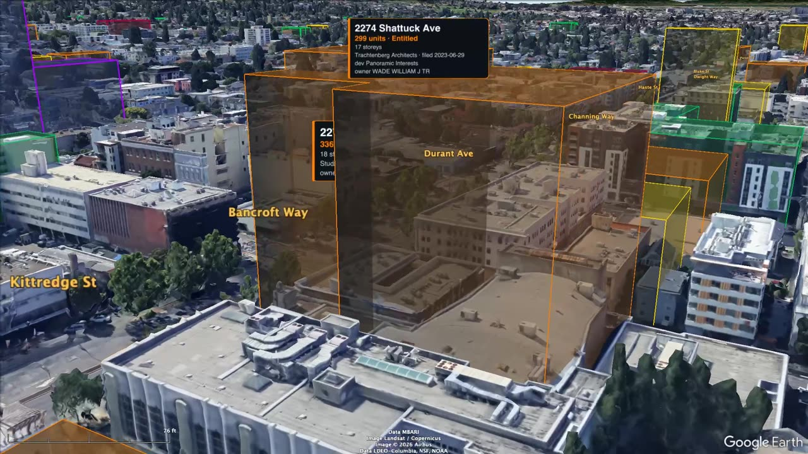
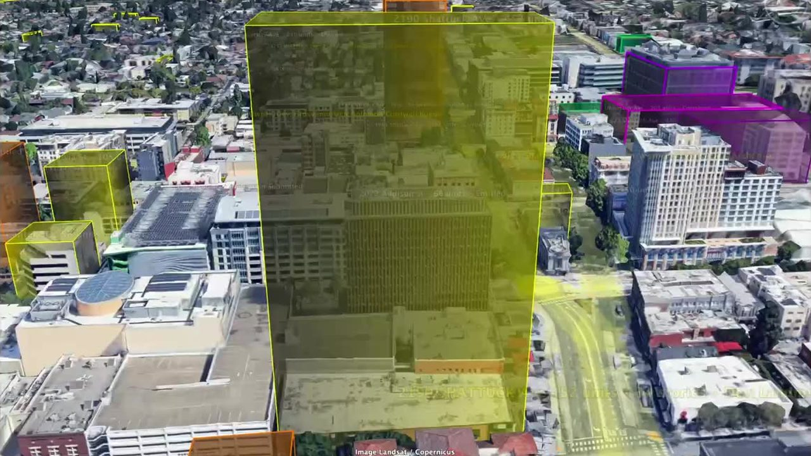
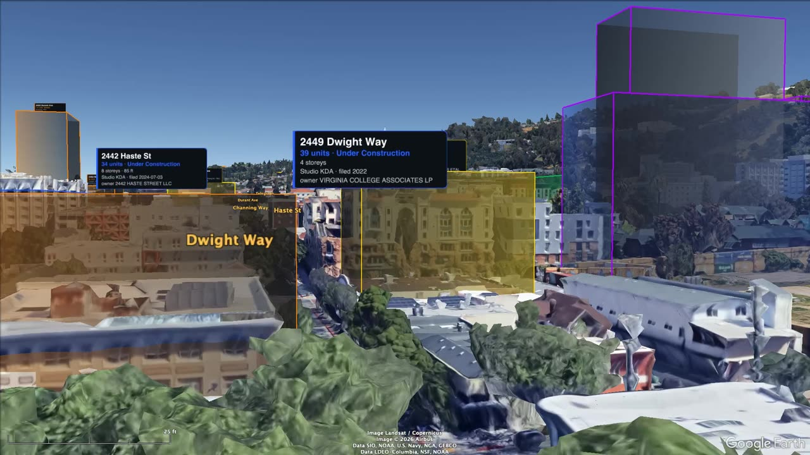
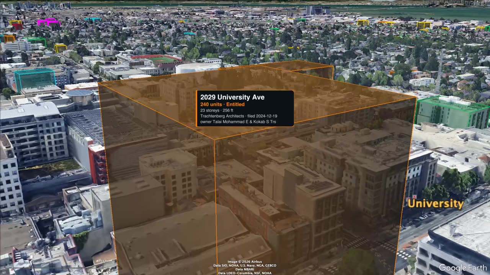
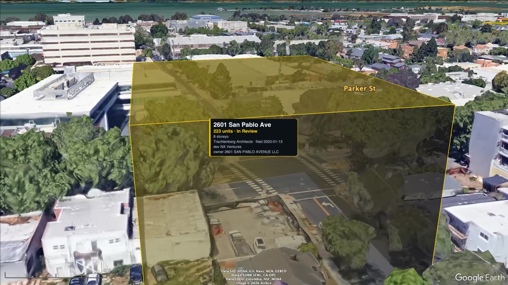
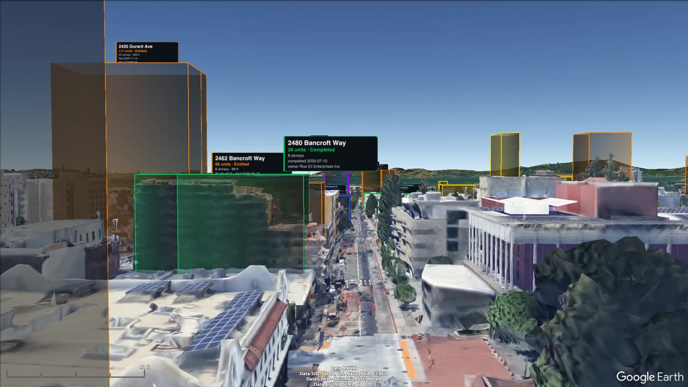
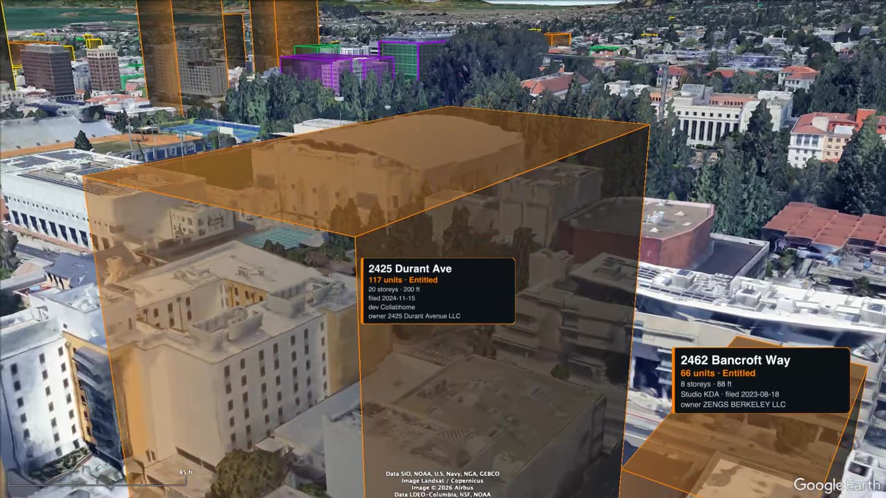
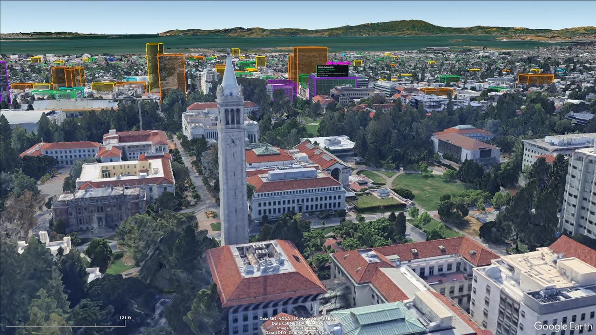
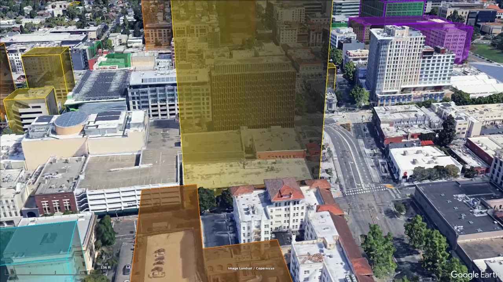

Each flyover plays beside a live map and Google Street View: watch the buildings planned for a street while you see the street as it stands today. Pick a route on the map or below.

7.8 minWoolsey Street through downtown to Rose, past the towers.
Fly it with the map and Street View →
7.4 minEvery project entitled or in review in June 2026, Rose Street to the Oakland line.
Fly it with the map and Street View →sync approximate
3.6 minFrom the Oakland line up past Ashby and Dwight to the campus.
Fly it with the map and Street View →
8.1 minThe full length, from the Berkeley Harbor to Oxford Street.
Fly it with the map and Street View →
7.2 min2.3 miles of west Berkeley, Albany line to Oakland border.
Fly it with the map and Street View →
7.9 minFrom the campus edge through downtown to the bay.
Fly it with the map and Street View →
3.9 minOne block south of campus, west to east.
Fly it with the map and Street View →
5.5 min5,010 beds in four projects.
Fly it with the map and Street View →
8.8 minEvery private project planned with more than 200 homes.
Fly it with the map and Street View →